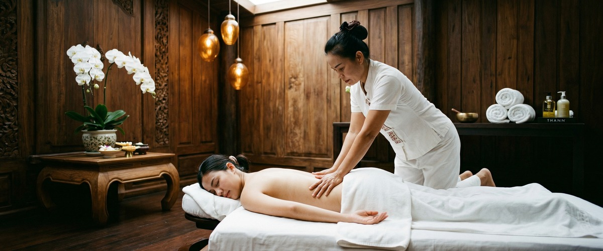
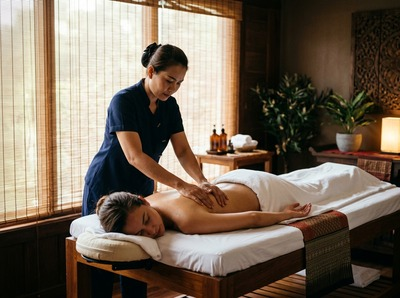

Your feet carry you through everything, and by the end of the day, you know exactly when they've had enough.

That heavy, burning ache in the soles, the tightness around the heel, the feeling that every step costs more than it should: tired and aching feet are one of the most common complaints among anyone who stands, walks, or moves for a living. Massage for tired feet offers real, evidence-backed relief. At Glasgow Thai Massage, it is something we treat with skill and care.
Foot fatigue is not a single condition. It is a group of related symptoms caused by overuse, poor footwear, reduced circulation, and stress on the soft tissue of the foot.
The plantar fascia is a thick band of tissue running from the heel to the ball of the foot. It absorbs most of the impact each time you take a step. Plantar fasciitis, one of the most common causes of heel and arch pain, develops when this tissue becomes inflamed through repeated strain.

Over time, the muscles, tendons, and fascia around it tighten and tire. The result is that familiar dull ache spreading across the sole.
Common causes include long periods of standing on hard floors, footwear that offers little support, and carrying extra load. Sitting for long stretches also slows blood flow in the legs, leaving feet stiff and heavy. The combined result is discomfort that affects mood, energy, posture, and your ability to stay active.
Massage works on tired feet in several ways at once. It releases tension in the plantar fascia and the soft tissue around it. It boosts blood flow through the lower limbs and reduces the built-up muscle fatigue that accumulates through the day.
Research published on foot massage and reflexology in PubMed Central confirms that targeted foot massage can improve circulation, ease stress, and reduce long-term pain. It is a safe and effective option for ongoing foot health.
Thai foot massage is rooted in traditional Thai medicine. It applies firm pressure to specific reflex points across the foot and lower leg. This stimulates nerve pathways, loosens the plantar fascia, and helps the body clear waste that builds up in tired tissue.
The result is not just short-term relief. Over time, tension and discomfort reduce in a measurable way.
For deeper muscle tightness — particularly in the calf and achilles, which directly affect how the foot functions — a Thai sports massage works through the back of the lower leg to release what drives plantar strain. You can book your session online and let us know where you are carrying the most discomfort before you arrive.
A foot and lower leg treatment at Glasgow Thai Massage begins with a short chat about your work, activity levels, and where the discomfort sits. We are on Floor 3 of Victoria Chambers on West Nile Street.
Maliwan and Jariya are both trained in the traditional Thai massage methods of Wat Pho in Bangkok. They will work through the sole, arch, heel, and lower leg using the techniques of Thai foot massage — a firm, precise, and deeply effective treatment.
Sessions are focused and purposeful. You stay fully clothed throughout. The treatment is designed to leave your feet lighter, your circulation restored, and the tension in your soles and calves clearly reduced.
For pain that keeps coming back, regular monthly sessions build results that a single visit cannot match.
Anyone whose daily life puts real demand on their feet will know the symptoms described here. Retail and hospitality workers on hard floors for eight hours. Nurses covering long ward rounds. Teachers and tradespeople who rarely sit down.
Runners and cyclists with tight legs. Office workers whose sedentary days leave their feet stiff and heavy by evening. All of these people carry tension in their feet that responds well to skilled massage. If that sounds like you, book a session and give your feet the attention they have been asking for.
Massage offers more than short-term comfort. It boosts blood flow, releases tension in the plantar fascia, and helps clear waste from tired muscles. Done regularly, it creates real improvements in foot health over time. A single session brings clear relief. A monthly routine reduces how often foot fatigue hits, and how badly.
Thai foot massage is a structured treatment rooted in traditional Thai medicine. It applies firm, precise pressure to specific reflex points on the sole, heel, and lower leg. These points connect to different systems in the body. It is far more targeted than a general foot rub. It works on the local tissue and the nerve and circulatory pathways linked to it.
Massage can be a useful part of managing plantar fasciitis. It works best when it covers the calf and achilles as well as the sole. Research shows that releasing the full back of the lower leg — not just the foot — leads to better results. Always tell your therapist about any diagnosed condition before your session so they can adjust the treatment.
For general foot fatigue, once every three to four weeks is a good routine. If you have ongoing pain or tightness, fortnightly sessions in the short term are more effective at breaking the tension cycle. You can then move to monthly once things settle. Your therapist can advise after your first session.
No. Traditional Thai foot massage is performed fully clothed. You will be asked to roll your trousers or leggings to the knee so the therapist can work through the lower leg and calf. Nothing further is needed. The session is focused, practical, and entirely comfortable.
Yes — especially when foot fatigue comes from tightness in the calf, achilles, or back of the lower leg rather than the foot itself. Thai sports massage works through these connected muscle groups. It releases the tension that puts excess strain on the plantar fascia and sole. For active people, combining foot massage with sports massage as part of a recovery routine works very well.